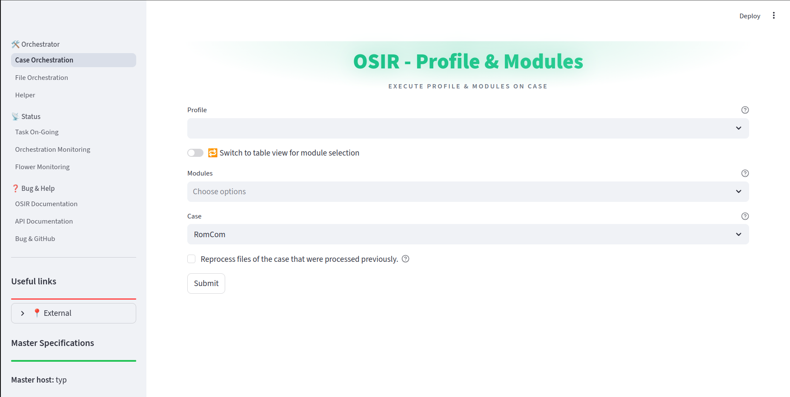
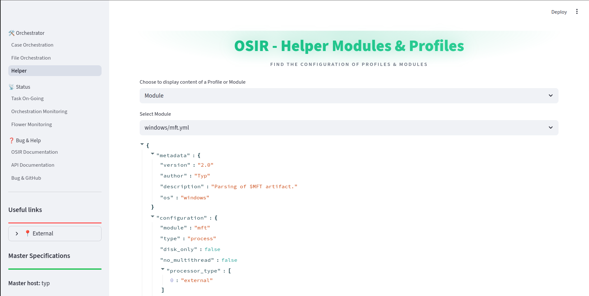
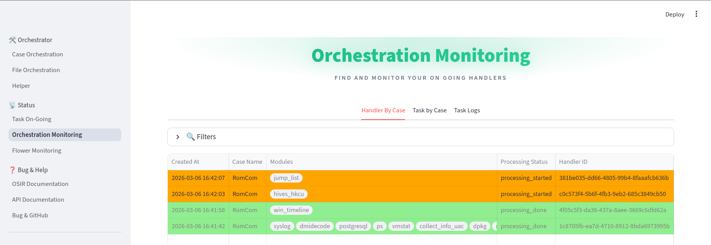
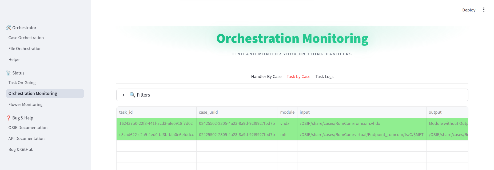
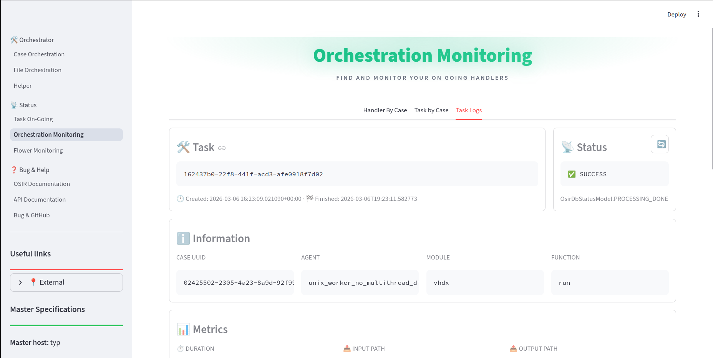

Web Usage
Orchestrator Actions
Case Orchestration
The Case Orchestration module allows users to execute profiles and modules on specific cases. Each execution creates a handler. A handler is defined by the OsirDbHandlerModel class in the osir_service/postgres/model directory. It contains:
The list of executed modules
The list of tasks generated by the master process
Available Actions:
Profile Selection — Choose from existing profiles to execute predefined sets of modules.
Module Selection — Select individual modules to execute on a case.
Module Management — Add or remove modules from selected profiles.
Module Configuration — Edit module configuration using a YAML editor.
Case Selection — Choose the target case directory for processing.
Reprocessing — Option to reprocess previously processed files.
Execution — Submit the selected profile/modules for execution on the chosen case.

File Orchestration
The File Orchestration module provides a file explorer interface for executing modules on specific files or folders. Each execution create only a task and not a handler.
Available Actions:
File Exploration — Browse the case directory structure.
File Operations:
View file content (first 5 lines preview)
Download files
View task logs associated with files
Module Execution:
Run modules on individual files
Run modules on all files within a directory
Search and Navigation — Search for specific files or directories.
Tree View — Expand/collapse the directory tree for easy navigation.
Exemple:
Windows & Linux module execution through WebUi :
Helper
The Helper module provides auxiliary functions for viewing configuration details.
Available Actions:
Profile Viewer — View the YAML configuration of any profile.
Module Viewer — View the YAML configuration of any module.
Configuration Inspection — Examine the structure and parameters of profiles and modules.

Status Monitoring Actions
Task On-Going
The Task On-Going module provides real-time monitoring of currently executing tasks.
Available Actions:
Task Listing — View all tasks with
task_createdorprocessing_startedstatus.Task Details — Click on any task to view detailed information.
Task Monitoring — Automatically switch to detailed monitoring view when selecting a task.
Status Filtering — View tasks filtered by processing status.
Orchestration Monitoring
The Orchestration Monitoring module provides comprehensive monitoring of handlers and tasks.
Handler Monitoring:
View all handlers by case
Filter handlers by case name and processing status
View handler details including associated task IDs
Delete handlers and their associated tasks
Clear all database entries for a specific case
Task Monitoring:
View all tasks associated with a case
Filter tasks by handler ID, module, and processing status
View detailed task information including execution traces
Download task logs
Rerun failed or completed tasks
Task Log Viewing:
View detailed execution logs for specific tasks
View task metrics and timing information
Download complete log files



Flower Monitoring
The Flower Monitoring module provides monitoring of Celery workers and tasks.
Available Actions:
Worker Monitoring — View status of all Celery workers (online/offline).
Task Details — View detailed task information through the Flower web interface.
Worker Management — Monitor worker health and availability.